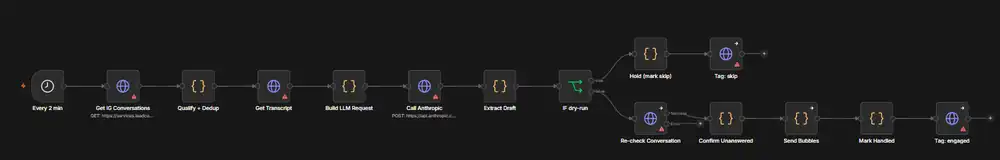
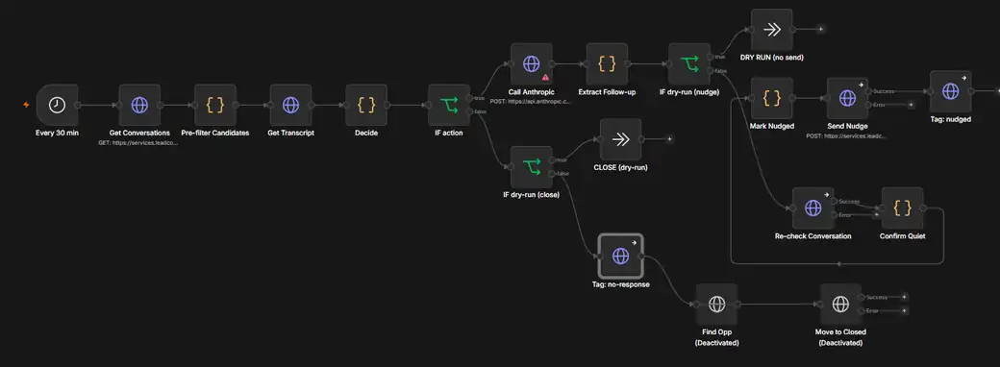

Two Instagram workflows re-contexted onto the MadeEA DM Setting SOP, guard-railed, documented, and imported into n8n. Every number and status on this page was measured against the built files, not estimated.
Screenshots from the live n8n instance. The red markers are credentials still to be selected; the deactivated nodes on the follow-up are the optional opportunity-pipeline steps, switched off deliberately.

IF dry-run is the safety split: held drafts go up to tagging only, approved drafts go down through a re-check before anything sends.

IF action splits nudge from close: one writes a follow-up matching the phase the conversation stalled in, the other closes the loop once Instagram's window shuts.
| Component | State | Notes |
|---|---|---|
| DM setter workflow | imported | 15 nodes, 2-minute trigger, dry-run on |
| Day-1 follow-up workflow | imported | 20 nodes, 30-minute trigger, dry-run on |
| SOP brain | live | Five phases, Fact Pack, three walls, objection scripts, follow-up ladder |
| Safety guards | enforced | Seven, each unit-tested against real drafts |
| GoHighLevel credentials | wired | Header Auth selected across all GHL nodes |
| Anthropic credential | outstanding | Last red node in both workflows |
| Location id & send token | outstanding | Two placeholders still unfilled |
| Booking link | decision | Currently a contact form, not a booking page |
| Timezone | decision | Placeholder value in four places |
| Sending | dry-run | Deliberate. Nothing reaches a lead until drafts are reviewed |
Items 1–3 and 6 are lookups in the GoHighLevel and Anthropic dashboards — minutes of work, no engineering. Items 4 and 5 are decisions only MadeEA can make. Item 7 is housekeeping on secrets that were exposed before this build started.
| Blocker | Type | Owner | |
|---|---|---|---|
| 1 | Anthropic API credentialThe Call Anthropic node in both workflows |
credential | MadeEA |
| 2 | GoHighLevel location idThree URLs across the two workflows | lookup | MadeEA |
| 3 | GHL private integration tokenThe TOKEN constant in Send Bubbles |
credential | MadeEA |
| 4 | Booking linkPhase 5 points at a contact form. A form between a warm DM and a booked call is where conversion leaks — a direct Calendly fixes it. The SOP lists this as its own gap #1 | decision | MadeEA |
| 5 | TimezoneThis clock decides what counts as an unsociable hour to DM a founder. Must match the n8n instance setting | decision | MadeEA |
| 6 | Team contact idsExclusion lists, so the setter never DMs our own people | lookup | MadeEA |
| 7 | Rotate two exposed secretsThe source workflow files carried a live Anthropic key and a GHL token in plaintext. Neither is in the new files, but both have been sitting on disk | security | MadeEA |
Nothing on this page is a claim about intent. Each line below was run against the built files.
node --checkWhen a draft breaks an SOP rule, the obvious move is to rewrite it and send the fixed version. The setter does not do that. A draft that trips a guard is held for a human and nothing is sent.
The reason is that the guards catch the failures where a plausible repair is more dangerous than silence. If the model quotes a price that isn't in the Fact Pack, the problem isn't the wording — it's that it invented a commercial term. Auto-correcting that to an approved number would send a confident message built on a reasoning error nobody ever sees. Holding it surfaces the error instead.
The cost is a queue of held conversations that need a person. That queue is visible as a tag, and its size is the honest measure of how well the prompt is tuned. A guard firing constantly means the SOP text needs work — not that the guard needs loosening.
The SOP specifies four touches: 24 hours, 3 days, 7 days, then gone cold. Only the first is built, and that is a platform limit rather than an omission.
Instagram will not deliver a message more than 24 hours after the lead's last one. The other three touches fall entirely outside that window — they cannot be sent on this channel at any cadence. The nudge fires at roughly 20 hours because that is the latest point that still honours the SOP's timing and remains deliverable.
Extending the ladder means changing channel — email, or a paid message tag. Until then the live sequence is: reply, one nudge, close the loop. Everything past that is manual, and worth knowing rather than discovering.
madeea-setter-* so they cannot trip an existing automation in the account.Call Anthropic node in both workflows.